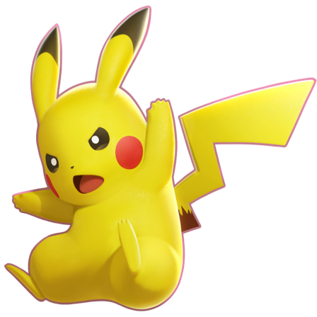
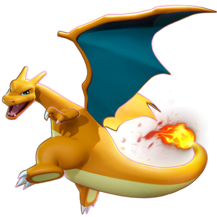
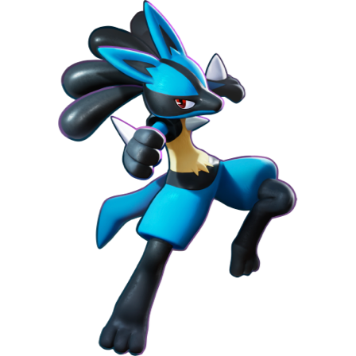
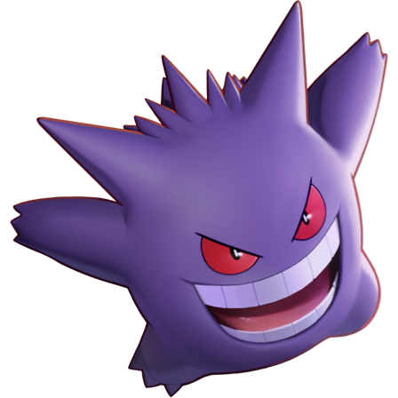
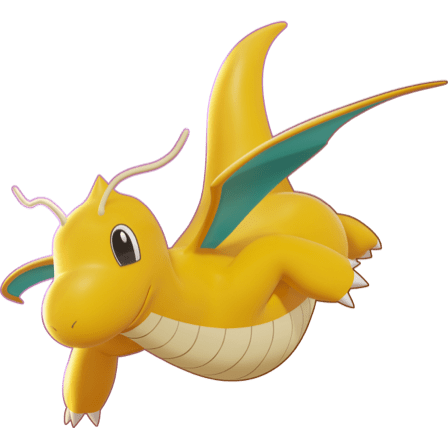

-
Pikachu
HP 300
Descrição
Os Pikachus são pequenos roedores de quarenta centímetros e de seis quilogramas, com um corpo redondo, e pernas curtas e uma longa cauda. Quando macho tem um formato de um raio, mas se o Pikachu for fêmea sua cauda ganha um coração na ponta.
-
Charizard
HP 800
Descrição
Charizards adora batalhas e seu espírito competitivo também é notável, uma vez que nunca vai cuspir fogo em um inimigo mais fraco a menos que provocado ou ordenado. Quando fica muito irritado, as chamas em sua cauda se tornam branco-azuladas
-
Lucario
HP 500
Descrição
Lucarios têm a capacidade de sentir as auras de todas as coisas. Entende o discurso humano. Um Lucario bem treinado pode sentir auras para captar sentimentos de criaturas a quilômetros de distância.
Gengar
HP 600
Descrição
Gengar, um Pokémon que espreita nas sombras, é um mestre dos ataques-surpresa. Ele consegue aparecer sorrateiramente por trás dos oponentes sem dar um pio.
Dragonite
HP 900
Descrição
Um Pokémon de bom coração com inteligência semelhante à humana, por isso Dragonite mostra sinais de altruísmo. Mas se reprime e fica satisfeito depois de esmagar qualquer coisa que o irritou em pedacinhos.
Venusaur
HP 700

Descrição
Existe uma flor grande nas costas de Venusaur. Quando ela recebe adquire cores mais vivas. O aroma da flor acalma as emoções das pessoas.
Blastoise
HP 800

Descrição
O Blastoise se torna pesado para que possa resistir ao recuo dos jatos de água que dispara. Os seus canhões de água são tão poderosos que são capazes de perfurar buracos através do aço grosso. Seus pés são firmados no chão antes de disparar seus jatos.